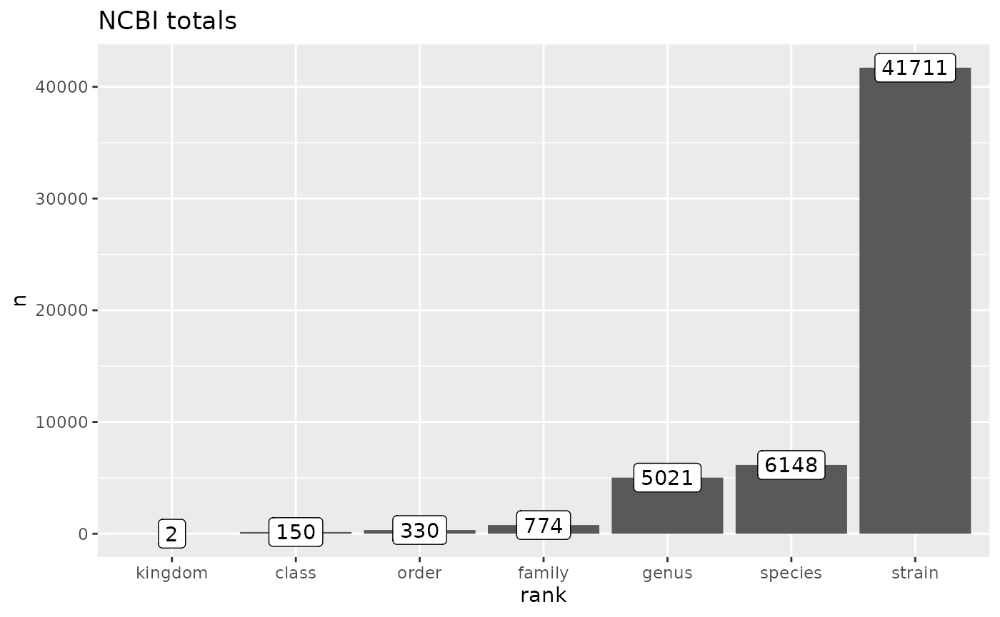
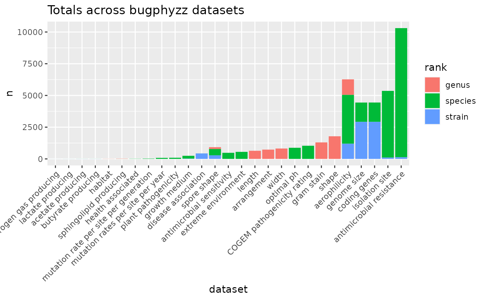
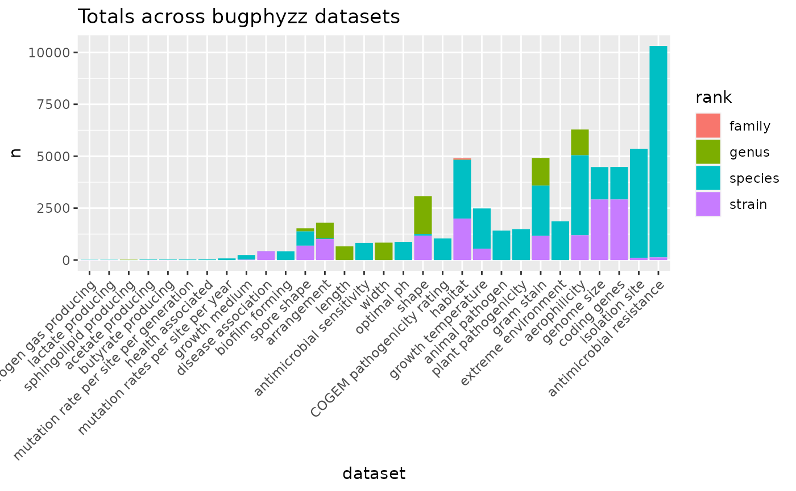

ncbi_taxonomy <- get_ncbi_taxonomy() |>
mutate(strain = ifelse(rank == 'strain', tax_name, NA))
dim(ncbi_taxonomy)
#> [1] 548054 11
head(ncbi_taxonomy)
#> # A tibble: 6 × 11
#> kingdom phylum class order family genus species NCBI_ID tax_n…¹ rank strain
#> <chr> <chr> <chr> <chr> <chr> <chr> <chr> <chr> <chr> <chr> <chr>
#> 1 Archaea NA NA NA NA NA NA 1935183 Asgard… clade NA
#> 2 Archaea NA NA NA NA NA NA 2798909 Candid… phyl… NA
#> 3 Archaea Candida… NA NA NA NA NA 2798916 Candid… class NA
#> 4 Archaea Candida… Cand… NA NA NA NA 2798922 Candid… order NA
#> 5 Archaea Candida… Cand… Cand… NA NA NA 2798928 Candid… fami… NA
#> 6 Archaea Candida… Cand… Cand… Candi… NA NA 2798934 Candid… genus NA
#> # … with abbreviated variable name ¹tax_name
ranks <- c(
'strain', 'species', 'genus', 'family', 'order', 'class', 'phyum', 'kingdom'
)
ncbi_counts <- ncbi_taxonomy |>
dplyr::filter(rank %in% ranks) |>
vapply(function(x) length(unique(x)), integer(1))
ncbi_counts_tbl <- tibble::tibble(
rank = names(ncbi_counts), n = ncbi_counts
)
ncbi_counts_tbl |>
filter(rank %in% ranks) |>
mutate(rank = factor(rank, levels = ranks)) |>
ggplot(aes(reorder(rank, n), n)) +
geom_col() +
geom_label(aes(label = n)) +
labs(
title = 'NCBI totals',
x = 'rank'
)
Completeness
phys = physiologies() |>
lapply(as_tibble)
phys_no_dup <- map(phys, ~ {
.x |> filter_dataset_for_propagation() |>
# remove_taxa_duplicates() |>
ci_to_scores() |>
distinct()
}) |>
keep(~!nrow(.x) == 0)
phys_filtered_counts <- map(phys_no_dup, ~ {
counts <- table(.x$Rank)
tibble::tibble(rank = names(counts), n = as.integer(counts))
}) |>
bind_rows(.id = 'dataset')
phys_filtered_counts |>
ggplot(aes(reorder(dataset, n), n)) +
geom_col(aes(fill = rank)) +
labs(
title = 'Totals across bugphyzz datasets',
x = 'dataset'
) +
theme(
axis.text.x = element_text(angle = 45, hjust = 1)
)
phys_counts <- map(phys, ~ {
.x <- dplyr::filter(.x, Rank %in% ranks)
counts <- table(.x$Rank)
tibble::tibble(rank = names(counts), n = as.integer(counts))
}) |>
bind_rows(.id = 'dataset')
phys_counts |>
ggplot(aes(reorder(dataset, n), n)) +
geom_col(aes(fill = rank)) +
labs(
title = 'Totals across bugphyzz datasets',
x = 'dataset'
) +
theme(
axis.text.x = element_text(angle = 45, hjust = 1)
)